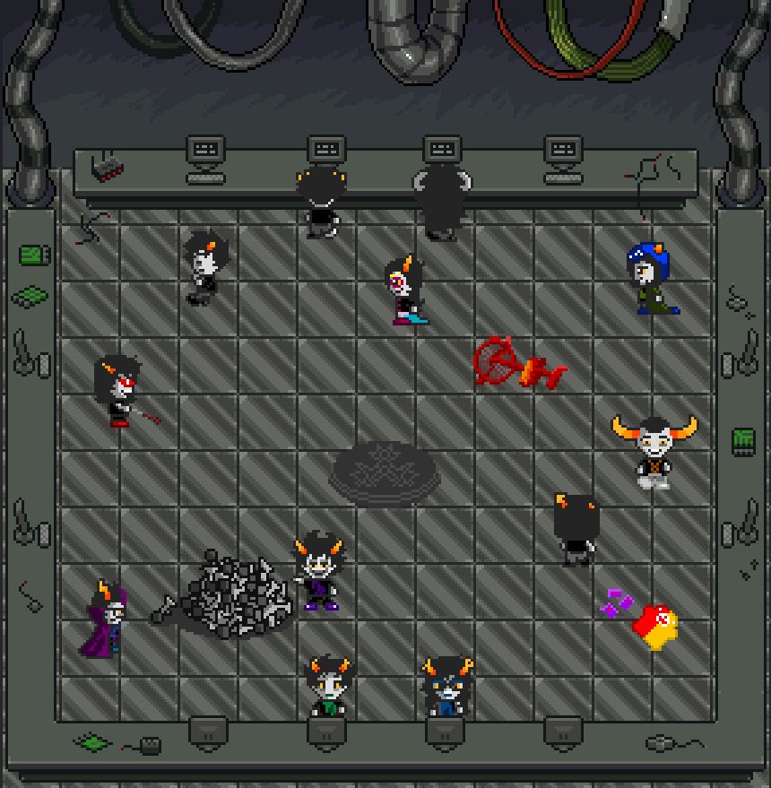
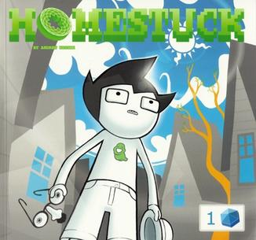

Why
I love homestuck because:
- All of the character it has,
- Because the story and lore of the world is really detailed,
- Because it incorporates music, gifs, games, and animations,
Music Gifs 
Games  Animations - Because is really different from anything i've seen,
- Because it uses different art styles,
- Because how creative it is,
- Because time travel, alternative time lines, dream bubbles, various universes, and shenanigans

